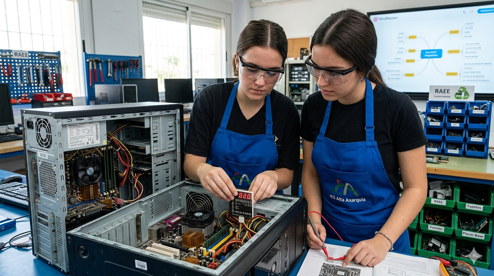

Introducción a la Sda: Diagnóstico y reparación de un fallo previo al POST de un equipo informático
En el perfil profesional del técnico en Sistemas Microinformáticos y Redes (SMR), la capacidad de respuesta ante un equipo que no inicia es la piedra angular de su competencia técnica. Esta Situación de Aprendizaje se ubica en el módulo de Montaje y Mantenimiento de Equipo, centrándose en uno de los escenarios más complejos y habituales del taller: el fallo crítico donde el equipo enciende pero no muestra imagen (fase pre-POST).
Esta propuesta busca transformar el taller en un entorno de servicios técnicos reales. No se trata solo de "arreglar ordenadores", sino de desarrollar un pensamiento lógico-analítico que permita al alumnado diagnosticar averías en la placa base, CPU, RAM o fuente de alimentación de manera sistemática y profesional.
Para abordar esta problemática, se implementan metodologías activas como el Aprendizaje Basado en Problemas (ABP) y el Aprendizaje Basado en Retos (ABR). El error no se presenta como un fracaso, sino como una fuente de datos. A través de una "frustración controlada", el alumnado debe transitar desde la incertidumbre inicial hasta la resolución técnica, apoyándose en el trabajo colaborativo y la mentoría entre pares.
Esta SdA integra la tecnología de doble forma: como objeto de estudio (el hardware a reparar) y como medio de aprendizaje. Se fomenta el uso de herramientas de curación de contenidos (Flipboard, Padlet) y de organización del pensamiento (MindMeister). De este modo, se potencia la competencia digital del alumnado, enseñándoles a documentar procesos, investigar en manuales técnicos y utilizar herramientas de diagnóstico digital de forma responsable y crítica.
En línea con los objetivos de la Agenda 2030, esta SdA pone un énfasis especial en la economía circular. El alumnado aprenderá a valorar la reparación frente a la sustitución sistemática y gestionará de manera ética los residuos de aparatos eléctricos y electrónicos (RAEE) generados en el taller, adquiriendo conciencia sobre el impacto ambiental de su futura profesión.
